Музейные коллекции
Уникальные артефакты и художественное наследие Таймыра
Коллекция артефактов
Исследуйте уникальные предметы материальной культуры коренных народов Красноярского края. Каждый экспонат хранит память поколений, отражая гармонию человека, природы и традиций Севера.
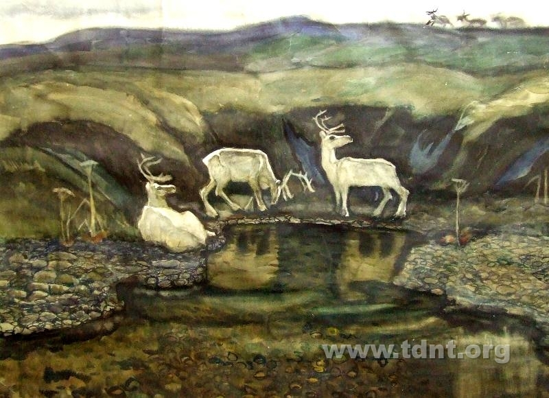
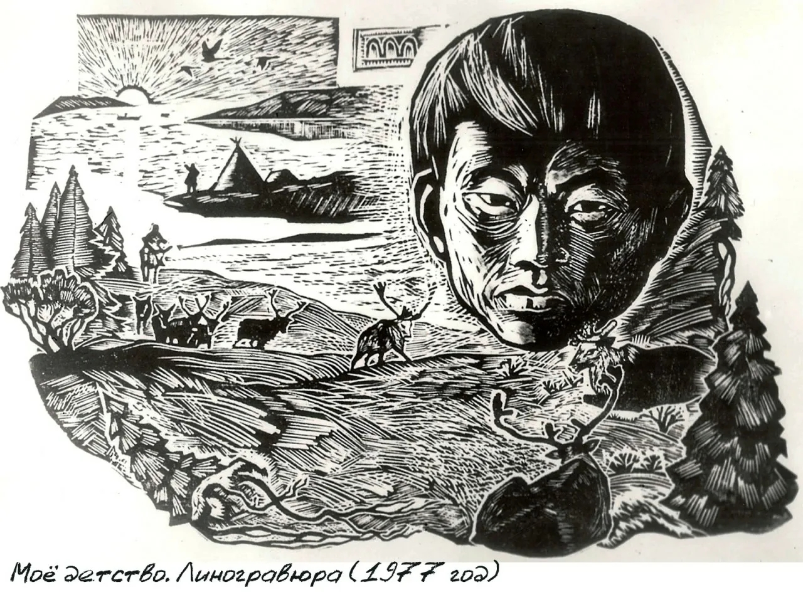
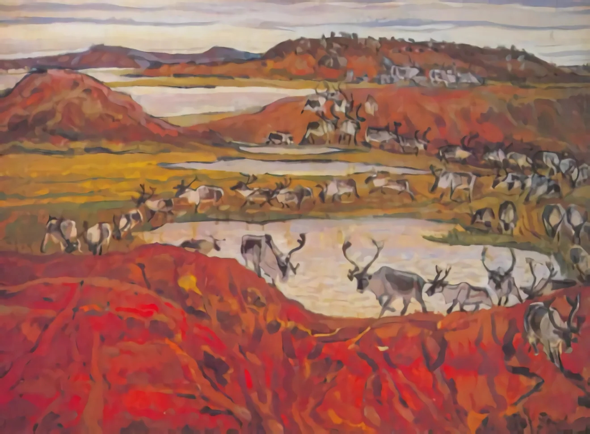
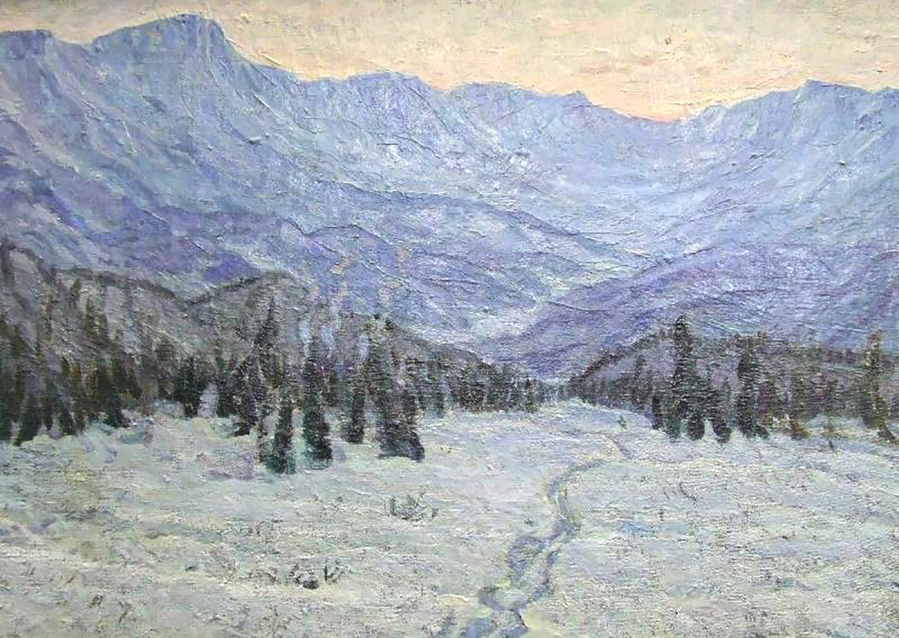
Молчанов Борис Николаевич
Живописец Таймыра, мастер этнографического пейзажа
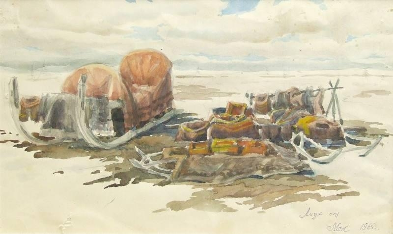
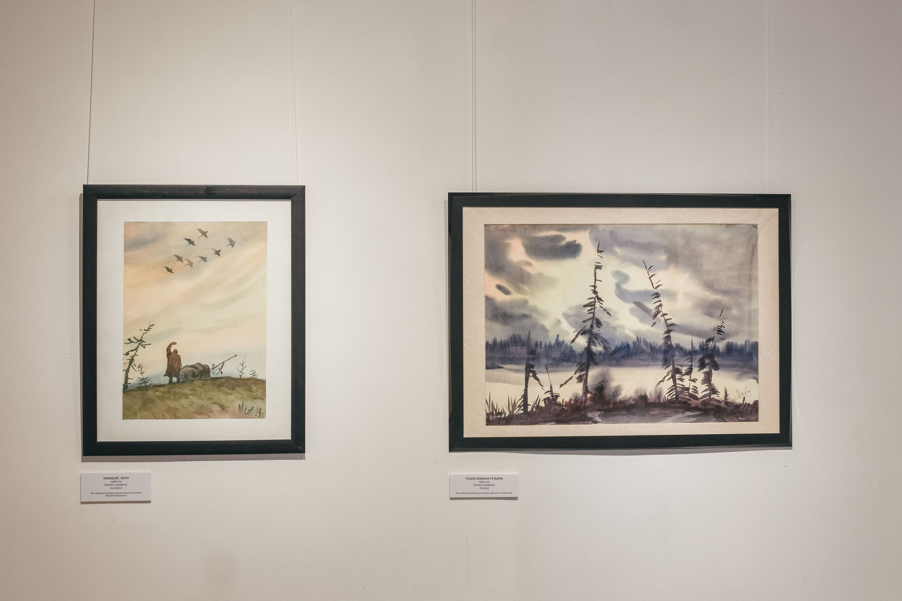
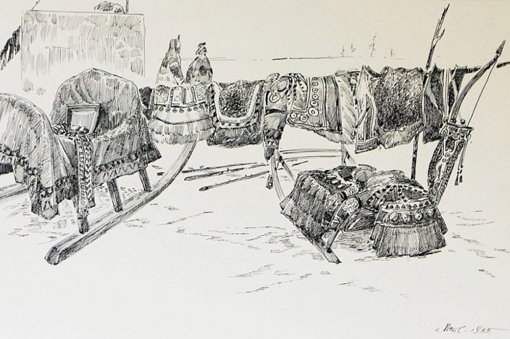
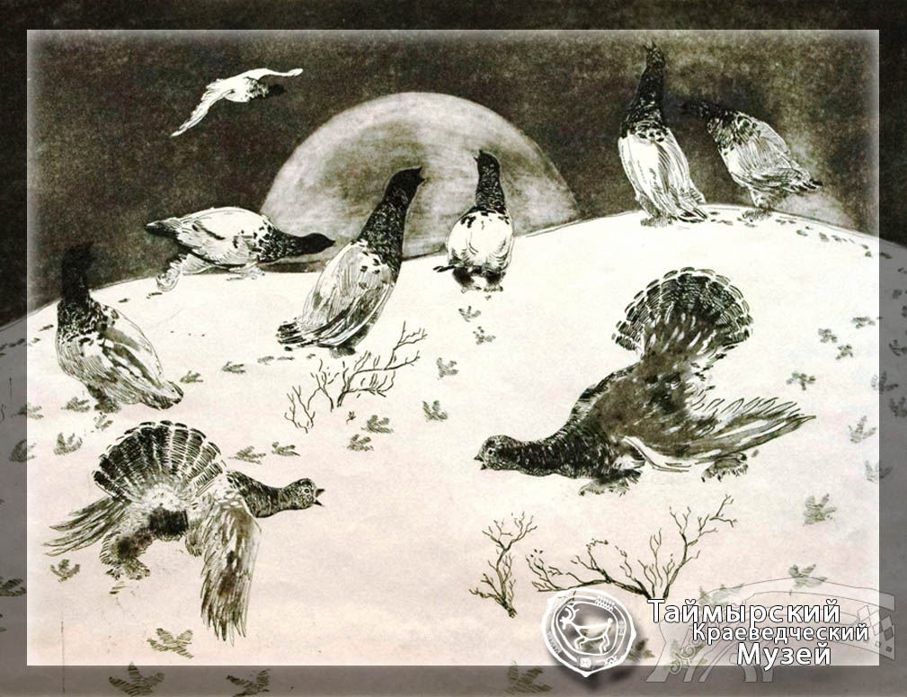
Мотюмяку Турдагин
Ненецкий график, летописец кочевой жизни
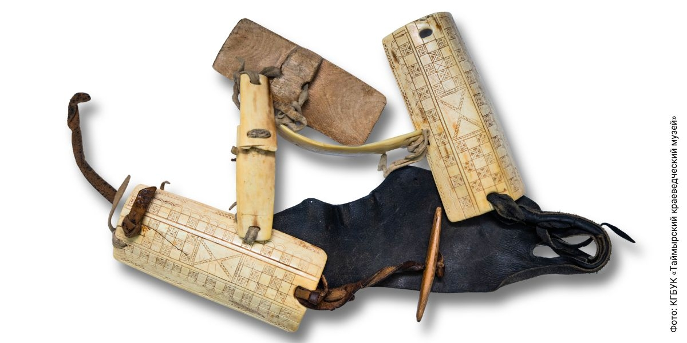
Налобник (недоуздок) передового оленя
Таймыр, долганы, вторая половина XX в.
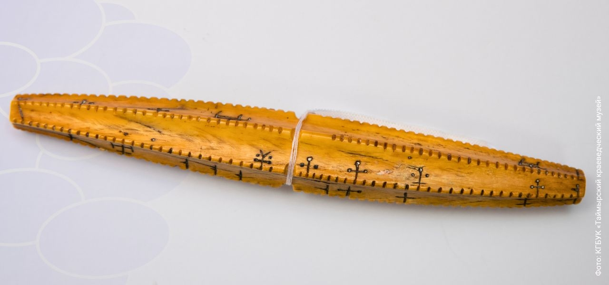
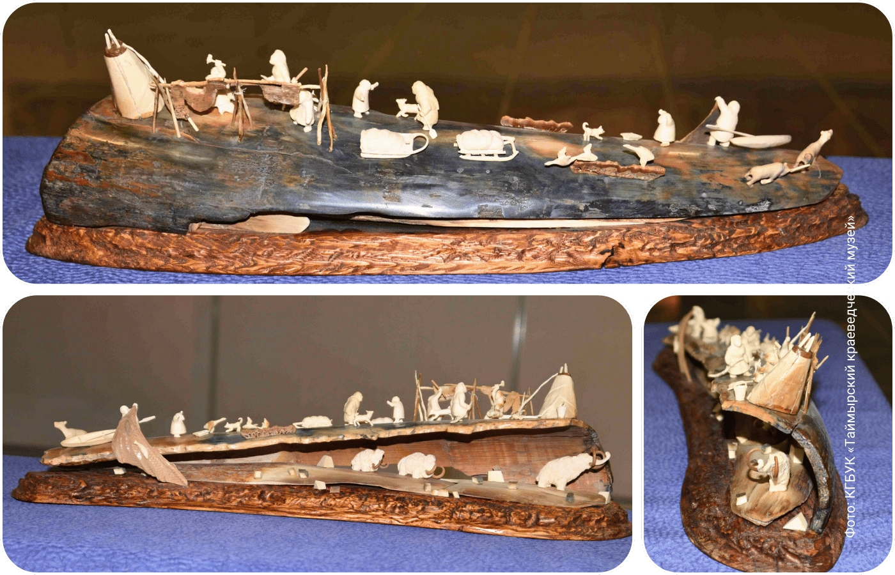
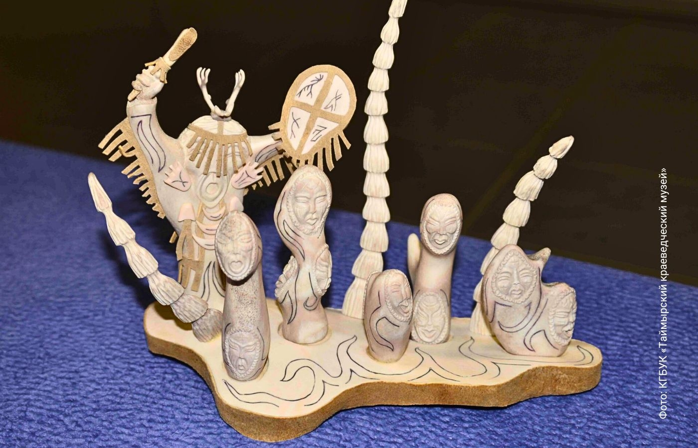
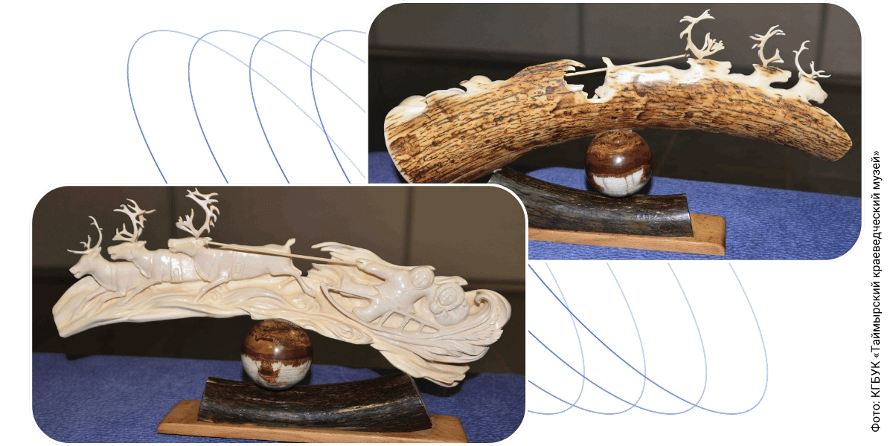
Скульптурные композиции и календари
Таймырские мастера резьбы по кости и рогу
О коллекциях
Таймырский дом народного творчества
Основной хранитель культурного наследия коренных народов Таймыра. В фондах музея более 5000 экспонатов, включая предметы быта, одежды, орудия труда, произведения декоративно-прикладного искусства.
Художественные коллекции
Работы современных художников Таймыра, сохраняющих и развивающих традиции изобразительного искусства коренных народов. Живопись, графика, скульптура из кости и рога.
Этнографические материалы
Предметы традиционного быта, одежды, утвари, орудий оленеводства, рыболовства и охоты. Уникальные образцы декоративно-прикладного искусства с традиционными орнаментами.
Цифровой архив
Проект по оцифровке музейных коллекций, реализуемый при поддержке компании «РН-Ванкор». Создает условия для сохранения и широкого доступа к культурному наследию.